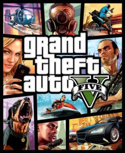

Nesse site vamos contar o contexto do GTA V
A história de GTA V se passa em San Andreas e acompanha três protagonistas: Michael (um ex-ladrão rico mas infeliz), Franklin (um jovem de rua) e Trevor (um psicopata imprevisível). Sob pressão de agências corruptas, o trio se une para realizar assaltos arriscados em um submundo caótico. O jogo é baseado em um modo histrória onde o player joga com os três personagens ao longo da história, com 69 missões ao todo, mostrando o cotidiano dos três personagens, o jogo tem um mundo aberto com aproximadamente 76 km², tendo diversos locais idendicos a cidade original (Los Angeles)
